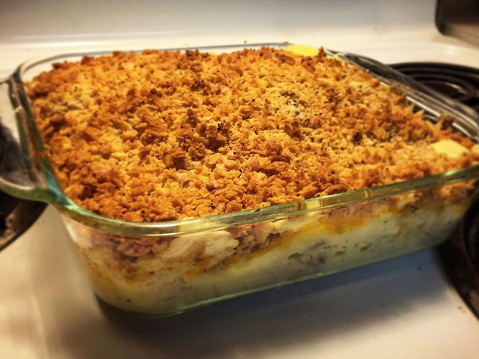

Poppy Seed Chicken Casserole

Description
This poppy seed chicken casserole recipe is a wonderful dish. Very easy to make!
Ingredients
- 4 skinless, boneless chicken breast halves
- 1 sleeve buttery round crackers (such as Ritz®), crushed
- ½ cup butter, melted
- 1 teaspoon poppy seeds, or more if desired
- Spices
- 1 (10.75 ounce) can condensed cream of chicken soup
- 1 (8 ounce) container sour cream
- 2 cups shredded Cheddar cheese
Steps
- Place chicken breasts into a large pot; cover with water and bring to a boil over high heat. Reduce heat to
medium, cover, and simmer until chicken is no longer pink in the center, about 20 minutes. Drain; shred
chicken with two forks.
- Preheat the oven to 350 degrees F (175 degrees C). Mix crackers, melted butter, and poppy seeds together in
a large bowl until combined; set aside.
- Stir condensed soup and sour cream together in a medium bowl; pour 1/2 of the mixture into a 9-nch square
baking dish. Add shredded chicken in an even layer; top with remaining soup mixture. Sprinkle with Cheddar
cheese, then top with cracker mixture.
- Bake in the preheated oven until cheese has melted and the sauce is bubbly, 25 to 30 minutes.